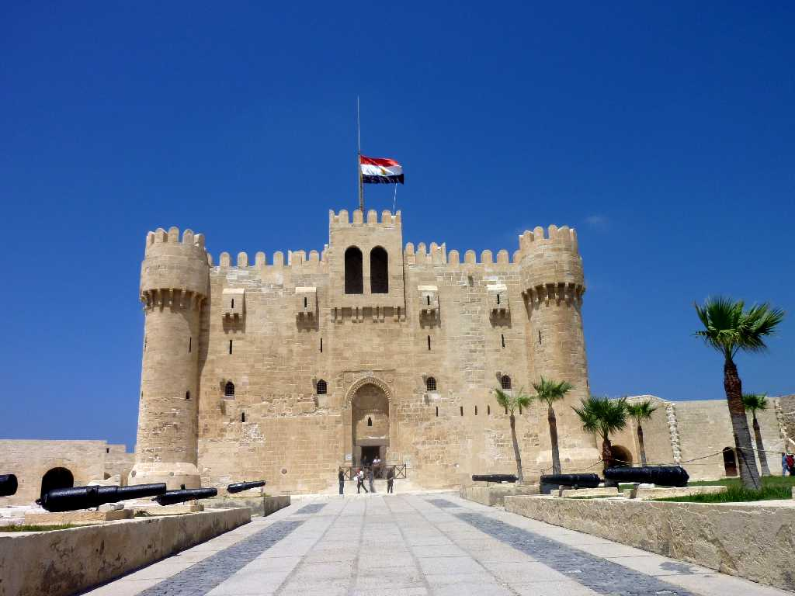
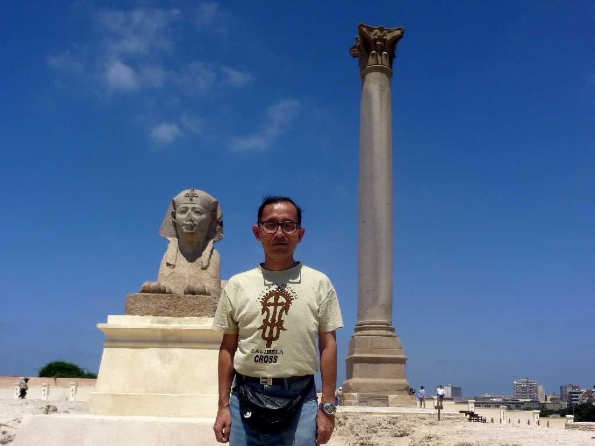
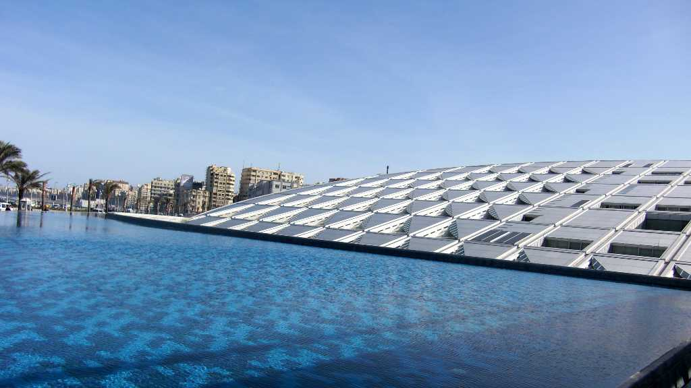

Alexandria Fort
世界の七不思議の一つファロス島の大灯台が崩壊した基礎部分と資材を用いて１５世紀に改造したカーイトバーイの要塞で中には大灯台時代の基礎が見られる

August 28 2010 Pompey Pillar Alexandria
ポンペイの柱は ２９２年ローマ皇帝ディオクレティアヌによって建築されたアレキサンドリアの守護神セラピスの寺院跡で高さ３０ｍ周囲８ｍアスワン産花崗岩の柱が４００本あったと考えられている

Alexandria Library
世界に誇る質量共に最大にして最高の７０万巻を所蔵していたと言われるアレキサンドリアの図書館跡に２００２年建てられた新図書館